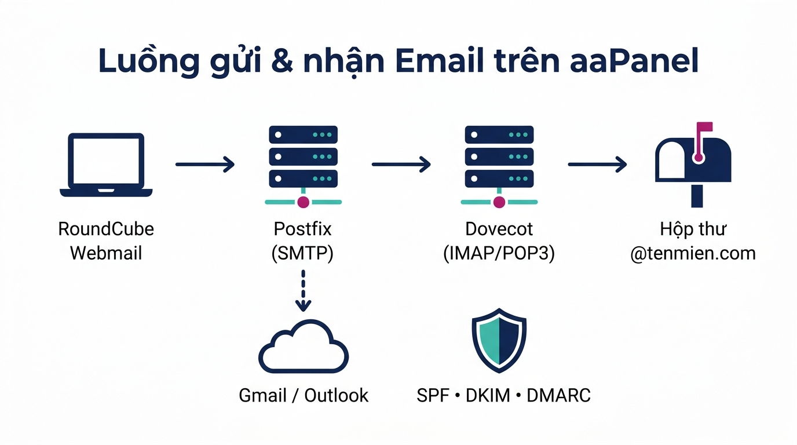
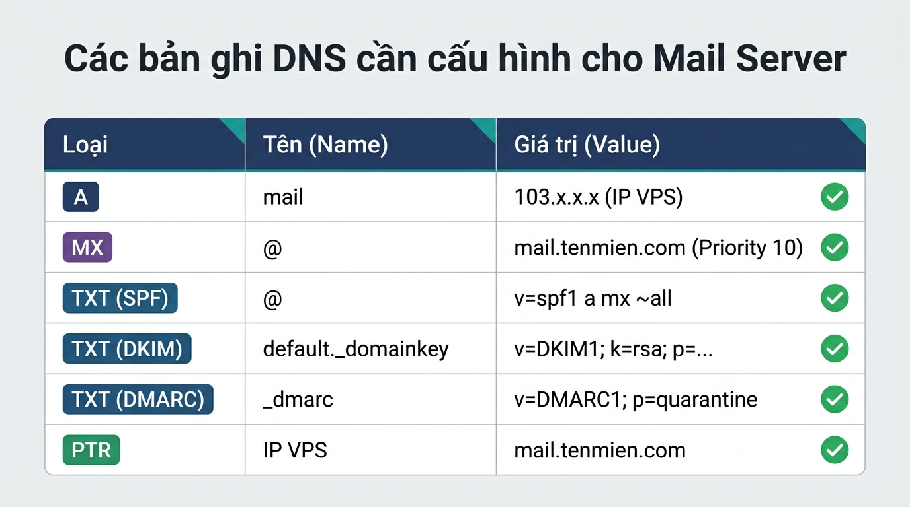

Bạn đang dùng VPS cài aaPanel và muốn có email theo tên miền riêng như lienhe@congtyban.com mà không phải trả phí hằng tháng cho Google Workspace? Bài viết này của TeamDevDesign sẽ hướng dẫn bạn cài đặt Mail Server trên aaPanel từ A–Z: từ khâu chuẩn bị VPS, cấu hình DNS (MX, SPF, DKIM, DMARC, PTR), cài webmail RoundCube, bật SSL cho tới gửi thư thử và xử lý lỗi vào spam. Làm đúng theo từng bước, bạn sẽ có một hệ thống email chuyên nghiệp chỉ trong khoảng 30–45 phút.
aaPanel là bảng điều khiển quản trị VPS miễn phí (phiên bản quốc tế của BT Panel). Khác với cPanel hay DirectAdmin có sẵn email, aaPanel không cài sẵn dịch vụ mail – bạn cần cài thêm plugin Mail Server từ App Store. Plugin này đóng gói sẵn các thành phần tiêu chuẩn của một hệ thống email:

| Nên dùng khi | Không nên dùng khi |
|---|---|
| Doanh nghiệp nhỏ, cần vài đến vài chục hộp thư theo tên miền | Cần gửi email marketing số lượng lớn (hàng nghìn mail/ngày) |
| Muốn tiết kiệm chi phí, đã có sẵn VPS chạy website | Nhà cung cấp VPS chặn port 25 và không hỗ trợ mở |
| Muốn toàn quyền kiểm soát dữ liệu email | Không có người theo dõi, bảo trì máy chủ định kỳ |
Phần lớn lỗi "gửi được nhưng không nhận được" hoặc "mail vào spam" đến từ khâu chuẩn bị. Hãy kiểm tra đủ checklist dưới đây trước khi bắt tay vào làm:
Để kiểm tra nhanh port 25 có bị chặn hay không, SSH vào VPS và chạy:
nc -vz gmail-smtp-in.l.google.com 25Nếu kết quả trả về succeeded hoặc open là đạt. Nếu bị timed out, bạn cần liên hệ nhà cung cấp VPS trước khi tiếp tục.
Plugin Mail Server của aaPanel kiểm tra hostname và Redis trước khi cho phép thêm domain. Nếu bỏ qua bước này, bạn sẽ gặp thông báo lỗi khi bấm Add Domain.
Hostname nên trùng với tên máy chủ mail mà bạn sẽ dùng (ví dụ mail.tenmien.com). SSH vào VPS và chạy:
hostnamectl set-hostname mail.tenmien.com
hostname -frequirepass rồi lưu lại.Khi cài xong, mở plugin và kiểm tra tab trạng thái dịch vụ: Postfix và Dovecot phải đang ở trạng thái Running.
Trong plugin Mail Server, chọn Domain List → Add Domain và nhập:
tenmien.com.mail.tenmien.com.Sau khi thêm, cột DNS sẽ hiển thị Not Set. Bấm vào đó để aaPanel hiển thị giá trị các bản ghi cần tạo (MX, TXT/SPF, DKIM). Bạn copy và tạo tương ứng tại nơi quản lý DNS của tên miền theo bảng dưới đây:

| Loại | Tên (Name) | Giá trị (Value) | Mục đích |
|---|---|---|---|
| A | IP của VPS | Trỏ máy chủ mail về VPS | |
| MX | @ | mail.tenmien.com (Priority 10) | Chỉ định nơi nhận thư cho tên miền |
| TXT (SPF) | @ | v=spf1 a mx ip4:IP_VPS ~all | Cho phép VPS gửi thư thay mặt tên miền |
| TXT (DKIM) | default._domainkey | Copy nguyên giá trị aaPanel cung cấp | Ký số thư, chống giả mạo |
| TXT (DMARC) | _dmarc | v=DMARC1; p=quarantine; rua=mailto:admin@tenmien.com | Chính sách xử lý thư không đạt SPF/DKIM |
| PTR | IP của VPS | mail.tenmien.com | Reverse DNS – đặt tại nhà cung cấp VPS |
Lưu ý khi dùng Cloudflare: bản ghi A của mail phải để chế độ DNS only (đám mây xám). Nếu bật proxy (đám mây cam), SMTP/IMAP sẽ không kết nối được vì Cloudflare không chuyển tiếp các port email.
DNS thường cập nhật trong 5–30 phút. Khi cấu hình đúng, quay lại aaPanel bấm kiểm tra lại, các mục sẽ chuyển sang dấu tick xanh ✅.
RoundCube giúp bạn đọc và gửi thư ngay trên trình duyệt qua địa chỉ như https://mail.tenmien.com. Ở các phiên bản aaPanel mới, plugin Mail Server có sẵn mục WebMail để cài RoundCube một chạm. Nếu phiên bản của bạn chưa có, hãy cài qua One-Click Deployment:
mail.tenmien.com – đường dẫn truy cập webmail.http://mail.tenmien.com – nếu thấy màn hình đăng nhập RoundCube là thành công.Email truyền mật khẩu và nội dung thư, vì vậy SSL là bắt buộc:
mail.tenmien.com.Vào Security (Firewall) trong aaPanel và đảm bảo các port sau đã được mở. Nếu VPS có firewall riêng ở trang quản lý của nhà cung cấp (Security Group), cũng cần mở tương tự:
| Port | Giao thức | Công dụng |
|---|---|---|
| 25 | SMTP | Nhận thư từ máy chủ khác, chuyển thư đi Internet |
| 465 | SMTPS (SSL) | Gửi thư từ phần mềm mail, mã hóa SSL |
| 587 | Submission (STARTTLS) | Gửi thư từ phần mềm mail, mã hóa STARTTLS |
| 993 / 143 | IMAPS / IMAP | Đồng bộ hộp thư (khuyến nghị dùng 993) |
| 995 / 110 | POP3S / POP3 | Tải thư về máy (khuyến nghị dùng 995) |
Trong plugin Mail Server, chọn Users → Add User và nhập:
sales@tenmien.com.Sau đó truy cập https://mail.tenmien.com, đăng nhập bằng địa chỉ email đầy đủ và mật khẩu vừa tạo, rồi soạn một thư gửi tới Gmail cá nhân để kiểm tra.
Truy cập mail-tester.com, copy địa chỉ email ngẫu nhiên mà trang cung cấp, gửi thư tới địa chỉ đó rồi bấm xem kết quả. Mục tiêu là đạt 9/10 – 10/10. Công cụ sẽ chỉ rõ bạn đang thiếu SPF, DKIM, DMARC hay PTR để khắc phục.
| Thông số | Giá trị |
|---|---|
| Máy chủ nhận (IMAP) | mail.tenmien.com – port 993 – SSL/TLS |
| Máy chủ gửi (SMTP) | mail.tenmien.com – port 465 (SSL) hoặc 587 (STARTTLS) |
| Tên đăng nhập | Địa chỉ email đầy đủ, ví dụ sales@tenmien.com |
| Xác thực SMTP | Bật, dùng chung tài khoản với IMAP |
Nguyên nhân phổ biến nhất là port 25 bị nhà cung cấp chặn. Kiểm tra lại bằng lệnh nc -vz gmail-smtp-in.l.google.com 25. Nếu bị chặn, gửi ticket yêu cầu mở hoặc cấu hình SMTP Relay qua dịch vụ trung gian như Amazon SES, SendGrid, Brevo.
mail.tenmien.com.Thường do chưa đặt hostname, chưa cài Redis hoặc chưa đặt mật khẩu Redis. Quay lại Bước 1, hoàn thành đủ cả ba mục rồi thử lại.
Kiểm tra bản ghi A mail đã trỏ đúng IP VPS, đã tắt proxy Cloudflare và website mail.tenmien.com đã được tạo trong mục Website của aaPanel.
Tự dựng Mail Server trên aaPanel giúp tiết kiệm chi phí và chủ động dữ liệu, nhưng đổi lại bạn phải tự chịu trách nhiệm về bảo mật, sao lưu, uy tín IP và theo dõi máy chủ. Nếu doanh nghiệp phụ thuộc nhiều vào email để chốt đơn, làm việc với đối tác, giải pháp email chuyên dụng (Google Workspace, Zoho Mail, Microsoft 365) sẽ ổn định hơn về khả năng vào inbox.
Nếu bạn không có thời gian tự cấu hình, đội ngũ TeamDevDesign cung cấp dịch vụ Hosting – Tên miền – Email doanh nghiệp và dịch vụ bảo trì, quản trị website & VPS trọn gói, giúp bạn yên tâm tập trung vào kinh doanh.
Không. aaPanel không cài sẵn dịch vụ email, bạn cần cài plugin Mail Server từ App Store và cài thêm RoundCube nếu muốn dùng webmail.
Tối thiểu 1 GB RAM có thể chạy được, nhưng khuyến nghị từ 2 GB RAM trở lên nếu VPS vừa chạy website vừa chạy email để đảm bảo ổn định.
Thường do thiếu bản ghi PTR, SPF, DKIM hoặc DMARC, hoặc IP VPS từng bị đưa vào danh sách đen. Hãy dùng mail-tester.com để kiểm tra và khắc phục từng mục.
Có. Bạn chỉ cần thêm tài khoản IMAP trên ứng dụng Mail của iPhone, Gmail app trên Android hoặc Outlook với thông số ở mục 8.
Được. Trong plugin Mail Server, bạn lặp lại bước Add Domain và cấu hình DNS riêng cho từng tên miền.
Như vậy, bạn đã hoàn tất cài đặt Mail Server trên aaPanel với đầy đủ các bước: chuẩn bị VPS, đặt hostname, cài Mail Server, cấu hình DNS (MX, SPF, DKIM, DMARC, PTR), cài RoundCube Webmail, bật SSL, mở port và kiểm tra điểm gửi thư. Hãy nhớ sao lưu dữ liệu email định kỳ và theo dõi danh sách đen IP để hệ thống luôn hoạt động ổn định.
Nếu cần hỗ trợ cài đặt hoặc muốn sở hữu website chuyên nghiệp đi kèm email doanh nghiệp, hãy tham khảo dịch vụ thiết kế website doanh nghiệp hoặc liên hệ TeamDevDesign để được tư vấn miễn phí. Chúc bạn thành công!